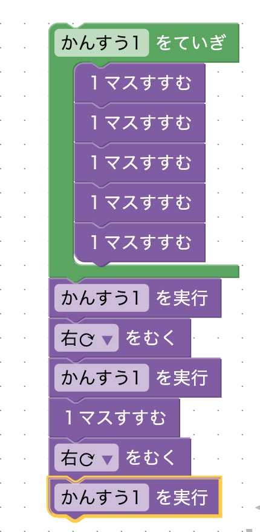
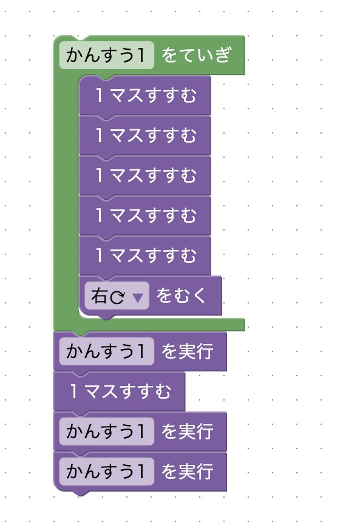

このステージでは、まずゴールまでの道を考え、その道のりを関数を使って簡略化できないか考えてみましょう。
ゴールまでは、「５マスすすむ、右をむく、６マスすすむ、右を向く、５マスすすむ」という道のりなので、「５マスすすむ」の部分を関数でまとめます。「５マスすすむ」の部分を「関数を実行」で置き換え、「６マスすすむ」の部分は「関数を実行、１マスすすむ」で置き換えると、次のように１２ブロックでクリアできます。
次のように、右を向く動作まで関数を使ってまとめると、星3を取ることができます。このように、プログラミングをする時は、何度も使う操作は関数にまとめておくことがよくあります。コードが読みやすくなり、間違いがあった時に修正するべき箇所がわかりやすくなります。
